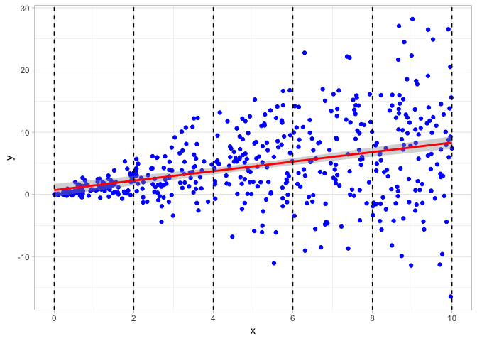

Replicating Stata’s ‘Robust’ Option for OLS Standard Errors in R
One of the advantages of using Stata for linear regression is that it can automatically use heteroskedasticity-robust standard errors simply by adding , r to the end of any regression command. Anyone can more or less use robust standard errors and make more accurate inferences without even thinking about what they represent or how they are determined since it’s so easy just to add the letter r to any regression.
In R, robust standard errors are not “built in” to the base language. There are a few ways that I’ve discovered to try to replicate Stata’s “robust” command. None of them, unfortunately, are as simple as typing the letter r after a regression. Each has its ups and downs, but may serve different purposes.
Below, I will demonstrate the two methods, but first, let’s create some random data that will have heteroskedastic residuals.
set.seed(20)
# draw 500 observations from a random uniform distribution (runif) between 0 and 10.
x<-runif(500,0,10)
# draw 500 observations from a random normal distribution
y<-rnorm(500,mean=x,sd=x) # set mean and sd are set as the value of each x value
# thus, as x gets larger, so does the sd, and thus the residuals
data<-data.frame(x,y) # make x and y variables in a dataframe called "data"We then run a regression of y on x:
reg<-lm(y~x)
summary(reg)##
## Call:
## lm(formula = y ~ x)
##
## Residuals:
## Min 1Q Median 3Q Max
## -24.7115 -2.4865 -0.3479 2.9699 20.6123
##
## Coefficients:
## Estimate Std. Error t value Pr(>|t|)
## (Intercept) 0.68508 0.52264 1.311 0.191
## x 0.76484 0.08887 8.607 <2e-16 ***
## ---
## Signif. codes: 0 '***' 0.001 '**' 0.01 '*' 0.05 '.' 0.1 ' ' 1
##
## Residual standard error: 5.949 on 498 degrees of freedom
## Multiple R-squared: 0.1295, Adjusted R-squared: 0.1277
## F-statistic: 74.08 on 1 and 498 DF, p-value: < 2.2e-16Let’s plot a scatterplot to visualize the data and add the regression line. Clearly, the data is “fan” shaped, centered on the regression line, but with larger and larger residuals (distance between the regression line and the data point, \(\hat{\epsilon}_i=\hat{Y}_i-Y_i\)) as \(X\) gets larger.

I have also broken up the scatterplot into 5 different sections over the range of x values. Below, I plot density plots of the residuals over each of the 5 different ranges of x values, and we can clearly see that the variance of the residuals dramatically increases as x increases.

Using the lmtest package, we can also formally run a Breusch-Pagan test for heteroskedasticity.
library("lmtest")
bptest(reg)##
## studentized Breusch-Pagan test
##
## data: reg
## BP = 90.547, df = 1, p-value < 2.2e-16Method 1: Sandwich package
In order to understand what the “fix” in this method is actually doing, we also need to look “under the hood” of what R is doing when it runs OLS and stores everything in the lm regression object.
One thing stored in reg is the variance-covariance matrix, estimating the covariance of each OLS estimator (the “betas”) with every other OLS estimator:
\[ \begin{pmatrix} cov(\hat{\beta_0},\hat{\beta_0}) & cov(\hat{\beta_0},\hat{\beta_1}) & \cdots & cov(\hat{\beta_0},\hat{\beta_k})\\\\\\ cov(\hat{\beta_1},\hat{\beta_0}) & cov(\hat{\beta_1},\hat{\beta_1}) & \cdots & cov(\hat{\beta_1},\hat{\beta_k})\\\\\\ \vdots & \vdots & \ddots & \vdots \\\\\\ cov(\hat{\beta_k},\hat{\beta_0}) & cov(\hat{\beta_k},\hat{\beta_1}) & \cdots & cov(\hat{\beta_k},\hat{\beta_k})\\\\\\ \end{pmatrix}\]
Since the covariance of anything with itself is the variance, the diagonal elements of this matrix are the variances of the OLS estimators:
\[\begin{pmatrix}var(\hat{\beta_0}) & cov(\hat{\beta_0},\hat{\beta_1}) & \cdots & cov(\hat{\beta_0},\hat{\beta_k})\\\\\\ cov(\hat{\beta_1}, \hat{\beta_0}) & var(\hat{\beta_1}) & \cdots & cov(\hat{\beta_1},\hat{\beta_k})\\\\\\ \vdots & \vdots & \ddots & \vdots \\\\\\ cov(\hat{\beta_k},\hat{\beta_0}) & cov(\hat{\beta_k},\hat{\beta_1}) & \cdots & var(\hat{\beta_k})\\\\\\ \end{pmatrix}\]
So if we look at the simple \(2 \times 2\) variance-covariance matrix in our simple reg using vcov, we see.
vcov(reg)## (Intercept) x
## (Intercept) 0.27315741 -0.039976551
## x -0.03997655 0.007897029We can extract just the diagonal of the matrix with diag():
diag(vcov(reg))## (Intercept) x
## 0.273157410 0.007897029These are the variances of \(\hat{\beta_0}\) and \(\hat{\beta_1}\). Since the standard error of an estimator is the square root of its variance, we simply square root these values to get the standard errors of \(\hat{\beta_0}\) and \(\hat{\beta_1}\), which were originally reported in our regression output next to the coefficient estimates.
sqrt(diag(vcov(reg)))## (Intercept) x
## 0.52264463 0.08886523Now, the whole problem is we know that due to heteroskedasticity, the standard errors are incorrectly estimated. To fix this, we use the sandwich package that allows us to manually recalculate the variance-covariance matrix using methods robust to heteroskedasticity. This is why I went through the trouble of describing the variance-covariance matrix above, as we will be recalculating it using a different method, the HC1 method, which is how Stata calculates it. I then store these calculates as rse in my original lm object called reg.
library("sandwich") # package that allows for robust SE estimation
# create Robust Standard Errors for regression as 'reg$rse'
reg$rse <-sqrt(diag(vcovHC(reg, type="HC1")))
# same procedure as above but now we generate vcov with "HC1" methodIf we now want to recreate the regression output table produced by summary(reg), we need to use the coeftest function, which is a part of the lmtest package. Just to verify, if we run coeftest() on our original reg, it prints the regression output table with coefficient estimates, standard errors, \(t\)-statistics, and \(p\)-values.
coeftest(reg) # test with normal SEs##
## t test of coefficients:
##
## Estimate Std. Error t value Pr(>|t|)
## (Intercept) 0.685077 0.522645 1.3108 0.1905
## x 0.764836 0.088865 8.6067 <2e-16 ***
## ---
## Signif. codes: 0 '***' 0.001 '**' 0.01 '*' 0.05 '.' 0.1 ' ' 1If we run it again, but set the vcov option to ccovHC(reg, "HC1"), it will print the robust standard errors.
coeftest(reg,vcov=vcovHC(reg,"HC1")) # tests with robust SEs##
## t test of coefficients:
##
## Estimate Std. Error t value Pr(>|t|)
## (Intercept) 0.685077 0.312060 2.1953 0.0286 *
## x 0.764836 0.093579 8.1732 2.504e-15 ***
## ---
## Signif. codes: 0 '***' 0.001 '**' 0.01 '*' 0.05 '.' 0.1 ' ' 1These command simply print the robust standard errors for us to see in the console as we run our analyses. If we want to take these and actually output them in a presentable regression table, we will use the well-known stargazer package, used to take R regression lm objects and print scholarly journal-quality regression tables.
The nice thing is stargazer has an option to set where the standard errors are pulled from. We stored our robust standard errors in reg as a vector called rse. Below, I print the stargazer regression table (with several personalized options) for this webpage, showing the our regression twice, once with the normal standard errors, and the second time with the robust standard errors. For more, see Jake Russ’ cheat sheet.
library("stargazer")
stargazer(reg, reg,
se=list(NULL,reg$rse),
type="html",
column.labels = c("Normal", "Robust SEs"),
title="Regression Results",
dep.var.caption = "",
omit.stat=c("adj.rsq","f")) The key to notice is se=list(NULL,reg$rse), which creates a list of objects from which to pull the standard errors for each regression in the table. The first regression uses the standard methods, needing no special source, so it is set to NULL. The second regression, also reg, uses our robust standard errors stored in reg$rse. The output of the table is below:
| x |
| Constant |
| Observations |
| R2 |
| Residual Std. Error (df = 498) |
| Note: |
A casual search around the internet, as well as the textbook that I use shows that this is the most common or reccomended method for achieving robust standard errors.
Method 2: Using estimatr
I recently discovered another package called estimatr that achieves the simplicity of changing a single word, just like in Stata.
Loading the estimatr package, all we need to do is create a new regression (I’ll call it reg.robust) and instead of running a normal linear model with lm, we run lm_robust, and set the standard errors se_type="stata" to calculate using the HC1 method (same as above).
library("estimatr")
reg.robust<-lm_robust(y~x,se_type = "stata")
summary(reg.robust)##
## Call:
## lm_robust(formula = y ~ x, se_type = "stata")
##
## Standard error type: HC1
##
## Coefficients:
## Estimate Std. Error t value Pr(>|t|) CI Lower CI Upper DF
## (Intercept) 0.6851 0.31206 2.195 2.860e-02 0.07196 1.2982 498
## x 0.7648 0.09358 8.173 2.504e-15 0.58098 0.9487 498
##
## Multiple R-squared: 0.1295 , Adjusted R-squared: 0.1277
## F-statistic: 66.8 on 1 and 498 DF, p-value: 2.504e-15We can see the standard errors are now identical to the robust ones from the method above.
One other nicety of estimatr is that it can create tidy data.frame versions of R default regression output tables, much like the broom package in the tidyverse. We do this simply with the tidy() command on our reg.robust.
tidy(reg.robust)Until today, I thought that was all estimatr could do: it could show us the robust standard errors, but we could not present it in an output table with stargazer. lm_robust objects do not get along well with stargazer, only lm objects.
Documentation is extremely scarce, but there is a starprep() command to enable use of estimatr lm_robust objects with stargazer. After a lot of searching and trial and error, the process seems to be that using starprep extracts only the (robust) standard errors from the lm_robust regression, meaning we just need to insert this into stargazer’s se= option.
# this is what starprep extracts
starprep(reg.robust)## [[1]]
## (Intercept) x
## 0.31205969 0.09357893Below, again, I run stargazer on our original reg twice, with the second instance using robust standard errors via estimatr. Specifically notice the list for se; again, like the fist method above, we use the default for the first regression (hence NULL), and for the second, we use starprep(reg.robust) to extract from estimatr.
stargazer(reg, reg,
se=starprep(reg,reg.robust),
type="html",
column.labels = c("Normal", "Robust SEs"),
title="Regression Results",
dep.var.caption = "",
omit.stat=c("adj.rsq","f")) | x |
| Constant |
| Observations |
| R2 |
| Residual Std. Error (df = 498) |
| Note: |
Again, we can see both methods achieve results identical to Stata. The nice thing about estimatr is we do not need to mess around with the variance-covariance matrix!